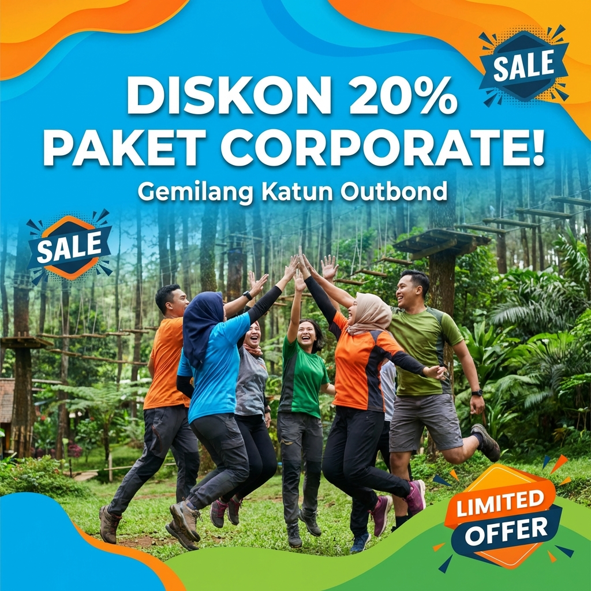

Membangun tim yang solid bukanlah perkara mudah. Di era modern ini, di mana kolaborasi menjadi kunci sukses setiap organisasi, memiliki sumber daya manusia yang mampu bekerja sama secara harmonis adalah sebuah aset yang sangat berharga. Namun, seringkali dinamika di dalam kantor membuat komunikasi terhambat dan ego masing-masing individu muncul ke permukaan. Di sinilah aktivitas outbound memainkan peran krusial.
Baca Juga:
Kenapa Outbound Efektif untuk Team Building?
Outbound bukan sekadar kegiatan jalan-jalan atau bermain di alam terbuka. Secara esensial, outbound adalah metode pembelajaran melalui pengalaman (experiential learning). Ketika karyawan atau anggota organisasi dilepaskan dari rutinitas kantor dan dihadapkan pada tantangan di alam bebas, topeng profesionalitas mereka seringkali luruh, memperlihatkan karakter asli yang lebih jujur.
"Outbound adalah cara paling jujur untuk melihat bagaimana sebuah tim bereaksi terhadap tekanan dan tantangan nyata." - Founder Gemilang Katun
1. Mencairkan Kebekuan Komunikasi
Aktivitas outbound dirancang untuk memaksa peserta berinteraksi. Dalam permainan seperti 'Blind Lead' atau 'Human Bridge', komunikasi yang buruk akan langsung berakibat pada kegagalan tim. Ini memberikan pelajaran instan bahwa setiap kata dan instruksi memiliki dampak nyata pada keberhasilan bersama.

Diskusi kelompok kecil untuk merencanakan strategi dalam permainan simulasi manajemen.
2. Membangun Kepercayaan (Trust Building)
Trust atau kepercayaan adalah fondasi dari setiap tim yang hebat. Melalui simulasi tantangan fisik yang terkontrol, peserta belajar untuk mengandalkan satu sama lain. Rasa percaya ini nantinya akan dibawa kembali ke lingkungan kerja, menciptakan suasana yang lebih kondusif dan minim konflik internal.
Dapatkan promo khusus gathering perusahaan bulan ini!
Strategi Outbound yang Tepat untuk Hasil Maksimal
Tidak semua outbound memberikan hasil yang sama. Di Gemilang Katun Outbond, kami percaya bahwa desain program harus menyesuaikan dengan masalah spesifik yang dihadapi oleh klien kami. Jika masalah utamanya adalah komunikasi, maka fokus simulasi harus pada pemecahan masalah (problem solving) kolektif.
Dalam skala yang lebih luas, outbound juga berfungsi sebagai media untuk mengidentifikasi potensi kepemimpinan (leadership) yang terpendam. Seringkali, saat menghadapi tantangan di lapangan, seseorang yang biasanya pendiam di kantor justru mampu mengambil inisiatif dan memberikan instruksi yang tepat sasaran. Ini memberikan feedback yang sangat berharga bagi manajemen dalam menyusun struktur organisasi yang lebih efektif.
Selain manfaat psikologis, outbound juga memberikan manfaat fisik yang signifikan. Di tengah gaya hidup sedenter (banyak duduk) di kantor, bergerak aktif di alam terbuka membantu menyegarkan kembali tubuh dan pikiran (burnout prevention). Udara segar pegunungan Batu Malang dikombinasikan dengan aktivitas fisik ringan hingga sedang mampu meningkatkan kadar endorfin, hormon yang membuat kita merasa bahagia dan rileks.
Program outbound yang kami tawarkan tidak hanya sekadar 'seru-seruan'. Setiap modul permainan telah melalui riset mendalam untuk memastikan adanya nilai edukatif yang bisa dipetik. Misalnya, dalam permainan 'Pipa Bocor', tim diajarkan pentingnya pembagian tugas yang adil dan bagaimana menjaga fokus di bawah tekanan situasi darurat. Setiap tetes air yang terbuang melambangkan efisiensi yang hilang jika tim tidak berkoordinasi dengan baik.
Keberhasilan sebuah sesi outbound sangat bergantung pada kualitas fasilitator. Tim Gemilang Katun Outbond terdiri dari individu-individu yang tidak hanya ahli dalam teknik outdoor, tetapi juga memahami dinamika psikologi kelompok. Kami bukan sekadar pemandu wisata, kami adalah partner transformasi tim Anda.
Kami juga melayani kebutuhan khusus seperti 'Adventure Outbound' bagi mereka yang menginginkan tantangan lebih ekstrem, atau 'Healing Outbound' yang lebih banyak diisi dengan sesi kontemplasi dan motivasi di pinggir danau atau hutan pinus yang tenang. Apapun kebutuhan tim Anda, Batu Malang menyediakan latar belakang yang sempurna, dan kami menyediakan keahlian operasionalnya.
Jika kita menilik data dari berbagai riset SDM global, perusahaan yang rutin mengadakan kegiatan team building di luar ruangan memiliki tingkat turnover (perputaran karyawan) yang jauh lebih rendah. Karyawan merasa lebih dihargai dan memiliki rasa kepemilikan (sense of belonging) yang kuat terhadap perusahaan. Inilah yang kami tuju: bukan hanya tim yang bisa bekerja, tapi tim yang mau berjuang bersama mencapai visi perusahaan.
Mengukur Keberhasilan Program Outbound
Banyak perusahaan yang merasa skeptis terhadap outbound karena dirasa hanya sebagai ajang hura-hura. Namun, di Gemilang Katun, kami menerapkan sistem evaluasi yang komprehensif. Melalui observasi fasilitator selama kegiatan, kami menyusun laporan dinamika kelompok yang mencakup beberapa aspek krusial:
- Leadership Flow: Siapa yang mengambil peran pemimpin dan bagaimana cara mereka memandu tim.
- Conflict Resolution: Bagaimana tim menghadapi kegagalan dalam permainan dan cara mereka bangkit kembali.
- Instruction Compliance: Sejauh mana tim mampu mengikuti aturan main yang kompleks, yang mencerminkan kedisiplinan terhadap SOP perusahaan.
Laporan ini kami berikan kepada manajemen sebagai bahan evaluasi internal. Dengan dasar data observasi ini, departemen HRD dapat menentukan langkah-langkah pengembangan SDM selanjutnya yang lebih tepat sasaran. Inilah nilai tambah yang kami berikan, yang membedakan kami dari sekadar operator wisata biasa.
Seiring dengan berkembangnya teknologi, kami juga mulai mengintegrasikan elemen 'Digital Scavenger Hunt' dalam beberapa modul kami. Peserta menggunakan aplikasi untuk memecahkan teka-teki, yang sekaligus melatih kemampuan adaptasi teknologi mereka. Namun, esensi dari interaksi antar-manusia tetap menjadi prioritas utama kami.
Persiapan Sebelum Melakukan Outbound
Bagi Anda yang berencana mengadakan outbound, ada beberapa hal yang perlu dipersiapkan untuk memastikan acara berjalan lancar. Pertama, tentukan tujuan utama dari kegiatan ini. Apakah untuk penyegaran setelah target tahunan tercapai, atau memang untuk membenahi masalah internal tim?
Kedua, komunikasikan kondisi fisik peserta kepada tim fasilitator kami. Hal ini sangat penting untuk penentuan jenis permainan yang akan diberikan. Kami ingin semua orang merasa terlibat dan aman selama kegiatan berlangsung tanpa ada yang merasa terbebani oleh batasan fisik.
Ketiga, pilihlah waktu yang tepat. Batu Malang memiliki cuaca yang sejuk, namun bulan-bulan tertentu memiliki curah hujan yang tinggi. Meskipun outbound dalam hujan memiliki sensasi tersendiri, namun untuk kenyamanan maksimal, konsultasikan jadwal Anda dengan tim kami jauh-jauh hari.
Penting untuk diingat bahwa refleksi (debriefing) setelah aktivitas adalah bagian terpenting dari sesi outbound. Tanpa debriefing yang baik, aktivitas tersebut hanyalah sekadar permainan menyenangkan tanpa makna mendalam. Fasilitator kami dilatih untuk menarik benang merah antara apa yang terjadi di lapangan dengan apa yang biasa terjadi di meja kerja.
Kesimpulan
Secara keseluruhan, outbound adalah investasi jangka panjang yang sangat menguntungkan bagi organisasi mana pun. Dengan memperkuat ikatan antar individu, meningkatkan efektivitas komunikasi, dan membangun budaya saling mendukung, outbound membantu menciptakan lingkungan kerja yang tidak hanya produktif tetapi juga membahagiakan.
FAQ Seputar Outbound Team Building
Apakah outbound hanya untuk tim besar?
Tidak sama sekali. Outbound bisa dilakukan oleh tim kecil mulai dari 10 orang hingga ribuan orang. Programnya akan disesuaikan dengan skala kelompok.
Apakah semua peserta harus aktif secara fisik?
Kami menyediakan berbagai level aktivitas, mulai dari yang intensitas fisiknya rendah (low impact) hingga yang tinggi. Keamanan dan kenyamanan peserta adalah prioritas kami.